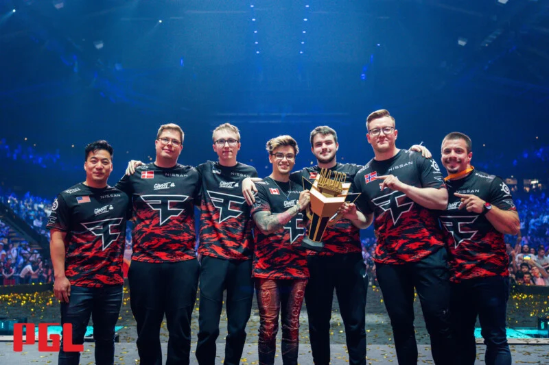

Optic Gaming se consagra campeon del VCT 2022 - Stage 1 - Masters Reykjavík ganando como premio una suma de $200.000 con un resultado de 3-0 contra el equipo LOUD que dio una gran papel en el torneo.
La escudra de Optic arranco el torneo muy bien en la fase de grupos obteniendo buenos resultados, pero en la fase eliminatorios tuvo algunos tropiezos en algunos mapas perdiendo en Upper Semi-final contra LOUD, bajando al Lower donde luego demostraria el gran equipo que ganadoles por 3-0 a Zeta Division y luego la final a Loud
VALORANT Champions 2021
Acend sale de campeon del evento mas importante de Valorant hasta la fecha, obteniendo como premio una suma de 325.000 con un resultado muy peleado de 3-2 a la escudra de Gambit que era el favorito de este torneo
La escudra europea durante todo el torneo fue superior a sus rivales ganando todos los partido con un resultado de 2-0. Empezo a ser una de la favoritas a llevarse el gran premio pero para obtenerlo tenia que ganarle a la poderoza Gambit que venia tambien siendo superior a sus rivales. La final fue una ida tras otra teniendo momentos muy decisivos que se termino llevando la final el equipo de Acendo ganando el ultinmo mapa .
VCT 2021: Stage 3 Masters - Berlin
Gambit sale de campeon del evento VCT 2021: Stage 3 Masters - Berlin , obteniendo como premio una suma de $225.000 con un resultado de 3-0 a la escudra de Team Envy que era el favorito de este torneo
Gambit no empezo muy bien en la fase grupos pero luego demostro el gran equipo que es ganando los dos partidos que tenia que ganar. En la fase eliminatoria fue superior a todos los equipos ganando 2-1 a Vision Strikers, luego por paliza le gano G2 Esorts(ganando un mapa por 13-0) y en la final destrozo a Team Envy .
FIN DEL MAJOR 2022
FAZE CAMPEOR DEL MAJOR
FaZe Clan se convirtió en el duodécimo club en presumir del trofeo más codiciado de Counter-Strike en su estante, y lo hizo con estilo, con una convincente victoria sobre Natus Vincere el domingo por la tarde. Además de hacer historia al convertirse en el primer equipo internacional en ganar el torneo más prestigioso de este deporte, la organización se suma a la selecta lista de ganadores del Major, que ya contaba con otros once nombres..
Entre ellos se encuentra Astralis, el máximo ganador de la competición con cuatro títulos, seguido de cerca por fnatic, tricampeón entre 2013 y 2015. Los otros diez trofeos se reparten entre diez clubes diferentes.
En esta lista, solo tres clubes ya no están presentes en Counter-Strike, a saber, EnVyUs (ahora Envy), Luminosity, que vino a negociar con Last Dance de Gabriel "FalleN" Toledo recientemente, y SK Gaming.

Los anteriores campeones ganadores del Major fueron NAVI en 2021 ganandoles G2 2-0 y el anterior fue Astralis ganandole Avangar tambien 2-0
Los anteriores MVP de las finales fue S1mple con Navi en la Major de Stockholmon y anterior fue Device con Astralis en la Major de Berlin
FIN DEL MAJOR 2021
NAVI CAMPEON DEL MAJOR
Presente en Counter-Strike desde 1,6 veces, Natus Vincere por fin ha puesto en su estantería el único trofeo que le faltaba para completar su colección.
Este domingo por la tarde (7), el equipo confirmó su favoritismo sobre G2 Esports para convertirse en campeón del PGL Major Stockholm 2021 y poner fin a su incesante búsqueda de la copa más codiciada en el escenario mundial de CS:GO . S1mple , el punto culminante de la decisión, es otro que ha estado persiguiendo el honor colectivo durante años y ahora, después de perder dos finales de Major, finalmente asegura el título, que otorga a su equipo un rotundo premio de $ 1 millón. G2 Esports , por su parte , tendrá que conformarse con un cheque de 300.000 dólares.
Los anteriores campeones ganadores del Major fueron NAVI en 2021 ganandoles G2 2-0 y el anterior fue Astralis ganandole Avangar tambien 2-0
Los anteriores MVP de las finales fue S1mple con Navi en la Major de Stockholmon y anterior fue Device con Astralis en la Major de Berlin